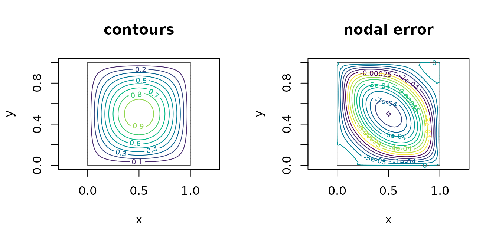
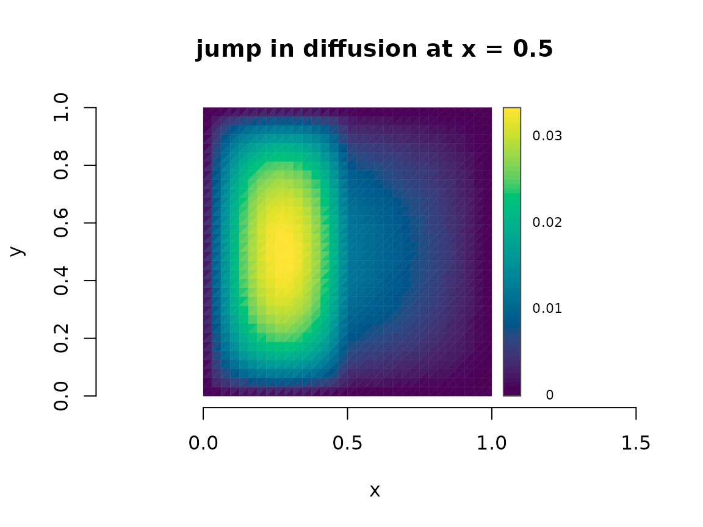
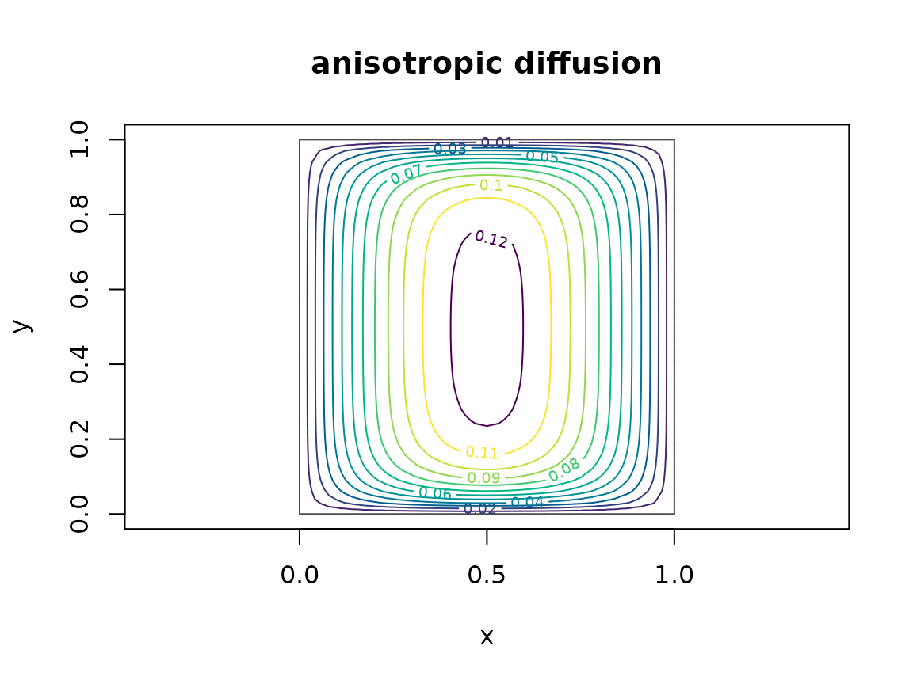

The model problem
-\nabla\cdot(k\nabla u) = f \ \text{in } \Omega, \qquad u = g \ \text{on } \Gamma_D, \qquad k \frac{\partial u}{\partial n} = h \ \text{on } \Gamma_N .
For k bounded and uniformly positive and \Gamma_D of positive length, the Lax-Milgram lemma guarantees a unique weak solution, and Cea’s lemma says the Galerkin solution is the best approximation in the energy norm. For smooth solutions on shape-regular meshes, P1 elements give
\|u - u_h\|_{L^2} = O(h^2), \qquad |u - u_h|_{H^1} = O(h),
and P2 elements one order more in each norm.
A manufactured solution
Choose u = \sin(\pi x)\sin(\pi y); then f = 2\pi^2 \sin(\pi x)\sin(\pi y) and u = 0 on \partial\Omega.
exact <- function(x, y) sin(pi * x) * sin(pi * y)
grad_exact <- function(x, y) cbind(pi * cos(pi * x) * sin(pi * y), pi * sin(pi * x) * cos(pi * y))
f <- function(x, y) 2 * pi^2 * sin(pi * x) * sin(pi * y)
mesh <- pde_mesh_rectangle(nx = 32, ny = 32)
problem <- poisson_problem(mesh, source = f, boundary = dirichlet_bc(0))
sol <- solve_pde(problem)
sol
#> <pde_solution> P1, 1089 dofs; solver cholesky (solved), relative residual 3.94e-14
#> u range [ 0, 0.9992]
c(L2 = errornorm(sol, exact, "L2"),
H1 = errornorm(sol, exact, "H1_semi", gradient = grad_exact))
#> L2 H1
#> 0.001350436 0.108975424The discrete solution can be inspected as a filled plot or with contour lines:
op <- par(mfrow = c(1, 2))
plot(sol$u, type = "contour", main = "contours")
err <- interpolate(exact, sol$space)
err$values <- sol$u$values - err$values
err$name <- "nodal error"
plot(err, type = "contour")
par(op)Quadratic elements
degree = 2 switches to P2 elements; nothing else
changes.
p2 <- poisson_problem(pde_mesh_rectangle(nx = 8), source = f, boundary = dirichlet_bc(0), degree = 2)
convergence_study(p2, exact, grad_exact, mesh_sizes = c(4, 8, 16, 32))
#> Mesh convergence study
#> h ndof L2 H1_semi rate_L2 rate_H1_semi
#> 0.35355 81 4.328e-03 0.129389 NA NA
#> 0.17678 289 5.481e-04 0.033387 2.981 1.954
#> 0.08839 1089 6.874e-05 0.008419 2.995 1.988
#> 0.04419 4225 8.601e-06 0.002110 2.999 1.997The affine patch test
A linear function is in the P1 space, so with zero source and matching Dirichlet data the discrete solution must be the exact solution up to rounding. This checks assembly, boundary enforcement and interpolation at once, and it holds on any mesh:
lin <- function(x, y) x + 2 * y
L <- pde_mesh_polygon(rbind(c(0, 0), c(2, 0), c(2, 1), c(1, 1), c(1, 2), c(0, 2)), h = 0.3)
s <- solve_pde(poisson_problem(L, source = 0, boundary = dirichlet_bc(lin)))
max(abs(s$u$values - lin(L$nodes[, 1], L$nodes[, 2])))
#> [1] 3.108624e-15Variable and anisotropic diffusion
The diffusion coefficient can be a function of position (checked to be positive at all quadrature points) or a constant symmetric positive definite matrix.
k <- function(x, y) 1 + 10 * (x > 0.5)
s <- solve_pde(poisson_problem(pde_mesh_rectangle(nx = 32), diffusion = k, source = 1,
boundary = dirichlet_bc(0)))
plot(s, main = "jump in diffusion at x = 0.5")
Ktensor <- matrix(c(1, 0, 0, 0.05), 2)
s2 <- solve_pde(poisson_problem(pde_mesh_rectangle(nx = 32), diffusion = Ktensor, source = 1,
boundary = dirichlet_bc(0)))
plot(s2$u, type = "contour", main = "anisotropic diffusion")
A coefficient that is not uniformly positive is rejected rather than silently producing an indefinite system:
solve_pde(poisson_problem(pde_mesh_rectangle(nx = 4), diffusion = function(x, y) x - 0.5,
source = 1, boundary = dirichlet_bc(0)))
#> Error:
#> ! The diffusion coefficient must be positive (minimum -0.4851 at quadrature points).Behind solve_pde()
discretize() exposes the assembled system:
disc <- discretize(problem)
disc
#> <pde_discretization> P1, 1089 dofs (961 free), nnz(A) = 7361
dim(disc$A); length(disc$dirichlet$dofs)
#> [1] 1089 1089
#> [1] 128The Dirichlet values are eliminated: with free indices f and Dirichlet indices d, the solver solves A_{ff} U_f = b_f - A_{fd} U_d. The reduced matrix A_{ff} keeps the symmetry and definiteness of A, so Cholesky applies; rows and columns are never overwritten inconsistently.